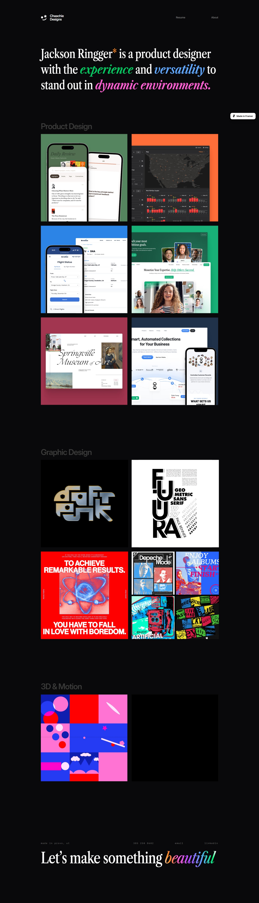
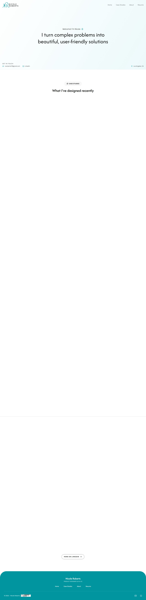
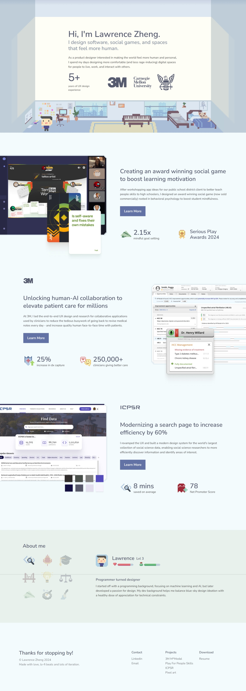
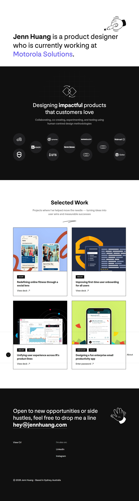
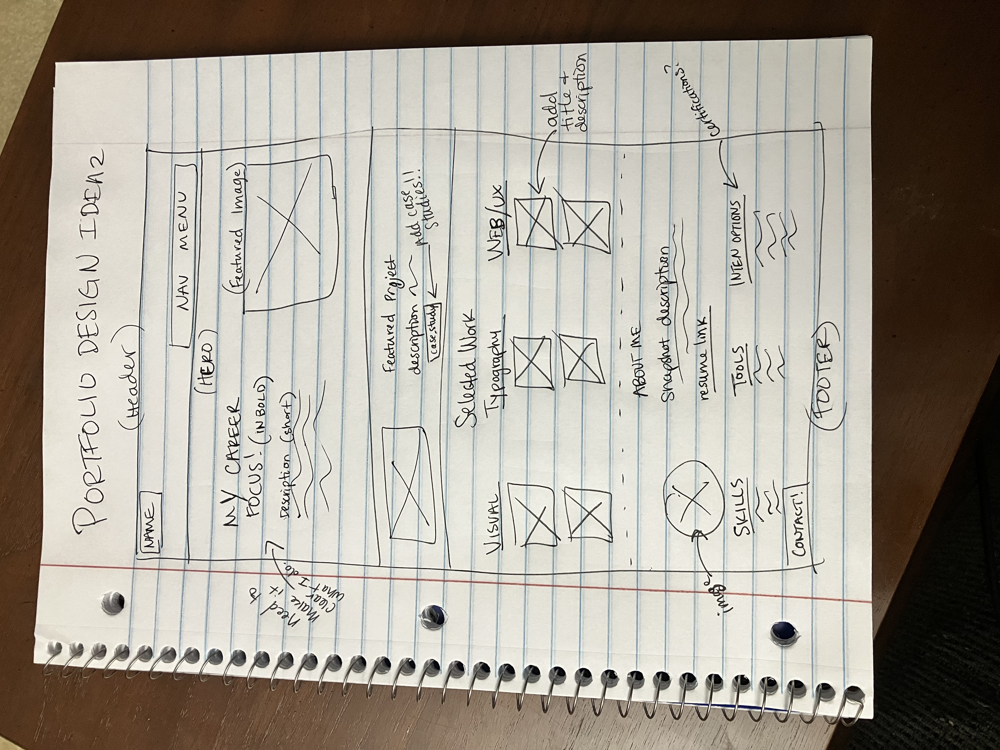
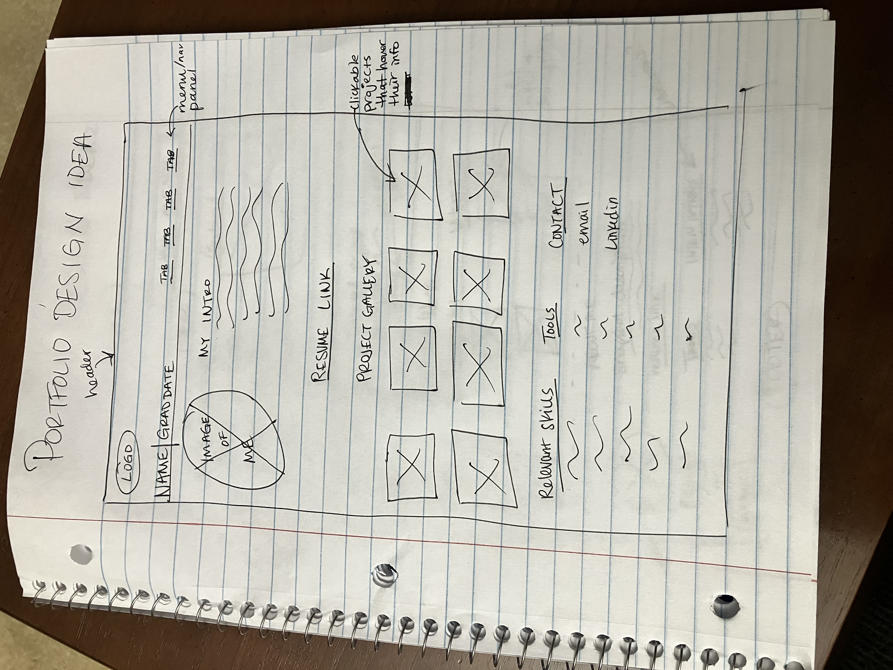
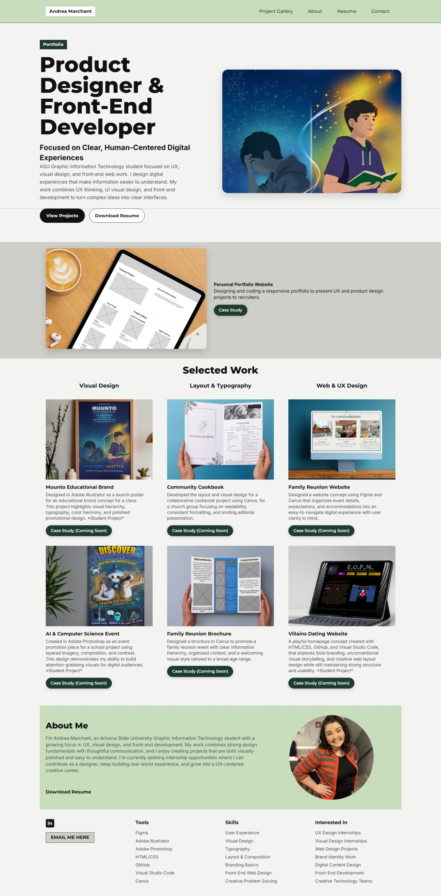

Personal Portfolio Website
Designed and developed a responsive portfolio website to communicate my product design process, showcase selected work, and help recruiters quickly understand my skills, experience, and professional direction.
Responsibilities and contributions
Role
Product Designer · UX Researcher · Front-End Developer
Core Responsibilities
Portfolio research, information architecture, wireframing, visual design, and front-end development.
Tools Used
Figma, HTML, CSS, GitHub Pages, and Visual Studio Code.
Creating a portfolio that works like a visual resume
This project involved designing and developing a portfolio website that functions as both a project showcase and a communication tool. The goal was to create a clear, professional, and responsive experience that allows recruiters to quickly scan my work, understand my design strengths, and see how I think through digital problems.
What this project accomplished
Responsive Build
Designed and developed a responsive portfolio website for internship applications.
Fast Scanning
Organized the layout to support quick recruiter review within an 8-12 second attention window.
Clear Storytelling
Structured projects and case studies to communicate process, skills, and professional direction.
Make it clear, fast, and responsive
The portfolio needed to communicate relevant information quickly, since recruiters often spend only a short time scanning early-career portfolios. The challenge was to create a site that felt visually polished while also making project categories, skills, and case studies easy to find across desktop and mobile screen sizes.
Understanding how recruiters evaluate portfolios
Research Questions
What information do recruiters look for first? How quickly do they scan portfolios? What makes a portfolio easy to navigate?
Key Finding 1
Project visibility and clear navigation help recruiters decide quickly whether to explore further.
Key Finding 2
Typography, spacing, and hierarchy make a portfolio feel more professional and easier to scan.
Visual Inspiration




Designing a portfolio that communicates value quickly
Recruiters reviewing portfolios need to quickly understand a designer's skills, thinking process, and project work. Many portfolios contain strong visuals but make information difficult to scan efficiently.
The challenge was to design a portfolio that clearly communicates professional direction, projects, and capabilities within seconds while maintaining a clean and engaging presentation.
Guiding decisions throughout the project
Scanability
Recruiters should understand my focus and project work within the first few seconds.
Clarity
Information hierarchy should guide viewers smoothly through projects, skills, and contact information.
Focus on Work
Visual styling should support the projects rather than distract from them.
From sketching to refinement
Early Exploration
I explored different layout directions to display the information in a clean and precise way. Sketching by hand before implementing the Figma wireframe helped me quickly decide what direction I wanted to pursue.
Typography & Composition
I refined the typography hierarchy and spacing to improve readability and visual balance while keeping my skills and project work prominent.


Key choices behind the final design
Typography
I used bold, high-contrast typography to establish a clear visual hierarchy and help viewers identify my focus, projects, and supporting details quickly.
Color & Tone
The muted green and neutral palette was chosen to feel calm, professional, and supportive of the work itself rather than competing with project imagery.
Layout & Accessibility
The layout was structured to support fast scanning, consistent spacing, and responsive behavior across screen sizes, with attention to readability, visual balance, and accessible presentation.
From wireframe to final responsive layout
Before building the final version of the portfolio, I created a wireframe in Figma to establish the layout hierarchy and information structure. This allowed me to quickly explore how recruiters would scan the page and where key content should appear.
After validating the layout direction, I refined the visual hierarchy, typography, and spacing before implementing the final responsive version in HTML and CSS.


Opportunities for iteration
Usability Testing
Conduct usability testing with recruiters or designers to evaluate clarity and navigation.
Analytics
Add visitor tracking to understand which projects users engage with most.
Mobile Refinement
Continue refining smaller-screen layouts to improve readability and flow.
A portfolio is a long-term communication tool
This project taught me that a portfolio is not just a place to display visuals — it is a user experience that should communicate value, process, and professional direction quickly.
I learned to think more intentionally about hierarchy, scanability, responsive behavior, and how to present work in a way that feels both polished and easy to understand. As I continue growing, this portfolio will remain an evolving product that reflects stronger research, clearer case studies, and more refined design systems thinking.